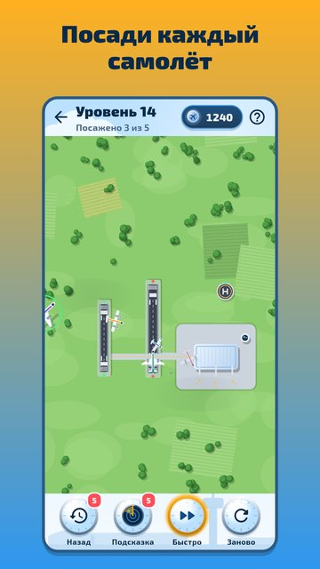

Авиадиспетчер: Посадка
Ты — авиадиспетчер. Над аэропортом кружат самолёты и вертолёты, у каждого тает топливо, и только ты решаешь, кто садится первым.
Нажми на борт, потом на полосу — и он заходит на посадку по-настоящему: разворачивается по дуге, выходит на глиссаду, выпускает дым из-под колёс и катится к терминалу. Пока самолёт на полосе, она занята: поспешишь — следующий уйдёт на второй круг. Не успеешь — топливо кончится. Каждая смена — маленькая головоломка про очередь и время.

- 300 уровней в 12 аэропортах: луг, сосновый лес, озеро, степь, горы, снег, остров, столица, морская гавань, пустыня, Заполярье и космопорт.
- Девять моделей: лёгкие самолёты, турбовинтовые, лайнеры, бизнес-джеты, широкофюзеляжные гиганты, грузовые, вертолёты, санитарные вертолёты и гидросамолёты.
- Новое каждые 10 уровней: ветер и посадка против ветра, сигналы SOS, вылеты с полосы, грозы над аэропортом, ночные смены с огнями полос, смена ветра, инспекция полосы.
- Настоящая физика полёта: радиус разворота, снос ветром, снижение и тени, которые встречают самолёт у земли.
- Ошибся? «Назад» отматывает время на 10 секунд. Не знаешь, кого сажать? Совет диспетчера подскажет.
- Смена дня — одна для всех, архив за неделю, ежедневные задания и праздничные события.
- Кнопка ×2 для тех, кто любит быстрее. Играй без интернета, на русском и английском.
По желанию — одно напоминание, если пропадёшь на неделю; выключается в настройках. Принимай смену — небо ждёт!